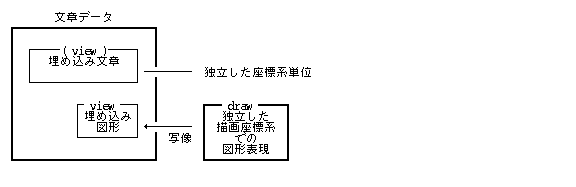
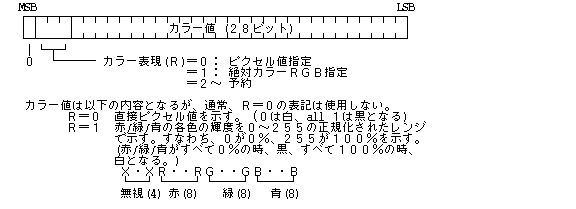
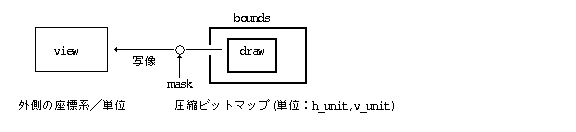

Ця специфікація описує деталізовану структуру даних TAD (TRON Application Databus). Пояснення базових концепцій специфікації BTRON, таких як «Реальний об'єкт» (Real Body), «Віртуальний об'єкт» (Virtual Body), «Наліпка / Вкладка» (Fusen), а також мети та призначення TAD, у цьому документі опущено.
Крім того, передбачається, що читач має базові знання про системи на базі специфікації BTRON (зокрема про файлову систему та графічні примітиви Display Primitives), а також про систему кодування TRON Code.
Формат TAD (TRON Application Databus) розміщується всередині Реального об'єкта (Real Body). У специфікації BTRON Реальний об'єкт (файл) може містити й інші структури даних, окрім TAD.
Реальний об'єкт (файл) у специфікації BTRON має такі основні характеристики:
Відповідає файлу у файловій системі BTRON і є безпосереднім контейнером даних.
Для кожного Реального об'єкта визначається тип додатка, якому відповідають піктограми (іконки) тощо. Також існують пристроєві Реальні об'єкти (Device Real Bodys).
Складаються з одновимірного ланцюжка кодових сегментів, для яких визначено типи записів (Record Type) та правила структури даних.
У специфікації BTRON кожен Реальний об'єкт (файл) складається з послідовності записів, для кожного з яких вказується тип запису (Record Type) та відповідна специфікація його внутрішніх даних. Коди типів записів дозволяють ОС та прикладним програмам правильно інтерпретувати та обробляти кожен блок даних.
Перелік типів записів Реального об'єкта наведено у таблиці нижче:
| Тип запису (Record Type) | Правила структури даних | |
|---|---|---|
| 0 | Запис посилання (Link Record) | Стандартні типи даних C |
| 1 | TAD Головний запис (Main Record) | Формат та структура TAD |
| 2 | TAD Запис коментаря (Annotation Record) | Формат та структура TAD |
| 3 | TAD Допоміжний запис (Auxiliary Record) | Формат та структура TAD |
| 4 | Зарезервований запис | − |
| 5 | Запис налаштувальної вкладки (Setting Fusen) | Формат та структура TAD |
| 6 | Запис специфічної вкладки (Specified Fusen) | Формат та структура TAD |
| 7 | Запис функціональної вкладки (Functional Fusen) | Формат та структура TAD |
| 8 | Запис функціональної вкладки розширення | Формат та структура TAD |
| 9 | Запис виконуваної програми (Executable Record) | Стандартний формат об'єктного коду |
| 10 | Контейнер даних (Data Box Record) | Формат Менеджера даних (Data Manager) |
| 11 | Запис шрифтових даних (Font Data Record) | Стандартний формат шрифтів |
| 12 | Запис словникових даних (Dictionary Record) | Стандартний формат словника |
| 13 | Зарезервований запис | − |
| 14 | Зарезервований запис | − |
| 15 | Запис системних даних (System Data Record) | Визначення системного додатка |
| 16〜31 | Запис прикладного додатка (Application Record) | Приватне визначення додатка |
Примітка: Записи типів 1–3, 5–8 містять структури даних формату TAD. Записи 9–15 призначені для системних ресурсів, виконуваного коду та шрифтів.
Основними даними Реального об'єкта є Головний запис TAD, у якому зберігається основний текстовий та графічний вміст документа.
Містить додаткові довідкові дані документа (Help, Copyright, інформація про автора), які зберігаються у форматі TAD, але не відображаються у вікні основними редакторами.
Містить допоміжні дані додатків у форматі TAD, які використовуються для розширеної обробки прикладними програмами.
Містить об'єктний виконуваний код програми. Тип архітектури процесора (CPU) вказується у заголовку запису:
| 0x100〜0x13F | Сімейство TRONCHIP | 0x00 | TRONCHIP32 |
| 0x140〜0x14F | Сімейство 68000 | 0x40 | 68000 / 68020 |
| 0x150〜0x15F | Сімейство NS32000 | 0x50 | 32032 |
| 0x160〜0x16F | Сімейство x86 | 0x60 | 8086 / 80286 / 80386 |
Містить структури Менеджера даних (Data Manager) для швидкого обміну та буферизації.
Зберігає системні налаштування та конфігураційні параметри середовища BTRON.
Структура даних TAD є універсальним форматом представлення інформації у специфікації BTRON. Вона використовується не лише у файлах Реальних об'єктів, а й при міжпроцесному обміні даними через буфер обміну (Tray / Clip) та між додатками.
Послідовність даних TAD складається з ланцюжка кодових елементів двох категорій:
<Сегменти фіксованої довжини>
Включають звичайні символи TRON Code та однобайтові/двобайтові керуючі коди:
| Звичайні символи | 1 або 2 байти TRON Code |
| Керуючі коди | 1 байт (0x00〜0x20) |
| Коди зміни мови / скрипту | Код префікса (0xFE) |
| Спеціальні коди символів | Код префікса (0xFF) + (0x21〜0x7E) |
Стандартні керуючі коди у форматі TAD:
| Нікчемний код (TNULL) | 0x00 |
| Табуляція (TAB) | 0x09 |
| Новий абзац (NL) | 0x0A |
| Нова колонка | 0x0B |
| Нова сторінка (FF) | 0x0C |
| Новий рядок / Повернення каретки (CR) | 0x0D |
| Пробіл / Розділювач (SP) | 0x20 |
<Сегменти змінної довжини>
Починаються з коду ескейп-префікса 0xFF, за яким слідує ідентифікатор ID сегмента (0x80〜0xFE) та двобайтне поле довжини LEN (16-бітний розмір даних сегмента).
| Категорія сегмента | ID сегмента (Segment ID) | |
|---|---|---|
| (Зарезервовано) | ------ | (0x80〜0x9F) |
| Текстові вкладки (Text Fusen) | TS_Txxxx | (0xA0〜0xAF) |
| Графічні сегменти (Figure Fusen) | TS_Fxxxx | (0xB0〜0xBF) |
| (Зарезервовано) | ------ | (0xC0〜0xDF) |
| Керуюча інформація | TS_INFO | (0xE0) |
| Початок текстового блоку | TS_TEXT | (0xE1) |
| Завершення текстового блоку | TS_TEXTEND | (0xE2) |
| Початок графічного блоку | TS_FIG | (0xE3) |
| Завершення графічного блоку | TS_FIGEND | (0xE4) |
| Растрове зображення (Bitmap) | TS_IMAGE | (0xE5) |
| Віртуальний об'єкт (Virtual Body) | TS_VOBJ | (0xE6) |
| Вбудований об'єкт / Дані | TS_DFUSEN | (0xE7) |
| Реальний об'єкт / Посилання | TS_FFUSEN | (0xE8) |
| Системні наліпки | TS_SFUSEN | (0xE9) |
Дані у форматі TAD поділяються на дві основні модальності: Текстові дані (Text Data) та Графічні дані (Graphic Data).
Текстові дані обмежуються парними сегментами TS_TEXT (початок тексту) та TS_TEXTEND (кінець тексту). Усередині текстового блоку розміщуються звичайні символи, текстові вкладки форматування, а також вкладені графічні блоки або віртуальні об'єкти.

Графічні дані обмежуються парними сегментами TS_FIG (початок графіки) та TS_FIGEND (кінець графіки). Усередині графічного блоку розміщуються графічні примітиви, макроси, трансформації координат та вкладені текстові блоки.

Текстові та графічні блоки можуть рекурсивно вкладатися один в одного (Nesting). Наприклад, графічний блок може містити текстовий підблок, який у свою чергу містить графічний примітив або віртуальний об'єкт.
Вкладення областей видимості (Scope Nesting):
[Графічний блок A]
[Графічний блок B] -- Вкладений у A
[Текстовий блок C] -- Вкладений у A
[Графічний блок D] -- Вкладений у C та A
Кожен текстовий або графічний блок задає дві області системи координат:



Растрові зображення представлені сегментом растрового масиву TS_IMAGE. Вони можуть розміщуватися як усередині графічних блоків, так і безпосередньо у текстовому потоці між символами.
Сегмент TS_IMAGE містить параметри колірної моделі (RGB, CMY, Палітра), глибину кольору, коефіцієнт стиснення та 1-бітову маску прозорості. Для відображення растрових зображень застосовуються виклики графічної підсистеми BTRON Display Primitives.
Синтаксична граматика документа TAD описується у нотації Бкуса-Наура (BNF):
| <Документ TAD> | ::= | <Елемент даних> [ <Документ TAD> ] |
| <Основний блок> | ::= | <Текстові дані> ｜ <Графічні дані> |
| <Текстові дані> | ::= | <TS_TEXT> [ <Вміст тексту> ] <TS_TEXTEND> |
| <Вміст тексту> | ::= | <Символьний код> ｜ <Текстова вкладка> ｜ <Графічні дані> ｜ <TS_IMAGE> ｜ <TS_VOBJ> ｜ <TS_DFUSEN> ｜ <TS_FFUSEN> |
| <Графічні дані> | ::= | <TS_FIG> [ <Вміст графіки> ] <TS_FIGEND> |
| <Вміст графіки> | ::= | <Графічний примітив> ｜ <Текстові дані> ｜ <TS_IMAGE> ｜ <TS_VOBJ> ｜ <TS_DFUSEN> ｜ <TS_FFUSEN> |
Усі системні та графічні сегменти TAD мають наведений нижче стандартний формат заголовка та даних. Дані вирівнюються по 8-бітній (байтовій) межі:
ID : Ідентифікатор сегмента (Segment ID / 1 байт після 0xFF) LEN : Довжина блоку даних сегмента (16-бітне ціле число) DATA: Корисне навантаження / масив структур сегмента
Базові типи даних у специфікації TAD:
typedef struct {
H h; -- Горизонтальна координата (X)
H v; -- Вертикальна координата (Y)
} PNT;
typedef struct {
H left; -- Ліва межа
H top; -- Верхня межа
H right; -- Права межа
H bottom; -- Нижня межа
} RECT;

>0: 1 / N см (наприклад, 400 відповідає 1 / 400 см) <0: 1 / N дюйма (наприклад, -240 відповідає 1 / 240 дюйма) =0: Відносні екранні одиниці / пікселі (за замовчуванням)
UUSS SSSS SSSS SSSS U: Одиниці (0 = пікселі, 1 = 1/20 мм, 2 = 1/20 типографського пункту) S: Розмір (значення)
Сегмент керуючої інформації (TS_INFO) містить глобальні системні налаштування та параметри обробки документа TAD. Якщо Реальний об'єкт містить документ TAD, цей сегмент розміщується на початку документа перед основними текстовими чи графічними даними.
ID : TS_INFO -- Сегмент керуючої інформації
LEN : ~ -- Змінна довжина
DATA: UH subid -- ID підсегмента
UH sublen -- Довжина підсегмента у байтах
UH data[] -- Дані підсегмента (довжиною sublen)
Визначені підсегменти TS_INFO:
subid: 0 -- Версія специфікації TAD
sublen: 2
data: UH ver -- Версія у 3-значному BCD-коді (наприклад, 0x0120 для версії 1.2)
Текстові дані у форматі TAD обмежуються сегментами початку тексту (TS_TEXT / 0xE1) та завершення тексту (TS_TEXTEND / 0xE2).
ID : TS_TEXT -- Сегмент початку тексту (TS_TBGN)
LEN : 24
DATA: RECT view -- Область відображення (View Region)
RECT draw -- Область малювання (Draw Region)
UNITS h_unit -- Одиниці вимірювання по горизонталі
UNITS v_unit -- Одиниці вимірювання по вертикалі
UH lang -- Початкова мова / мовний скрипт
UH bgpat -- ID візерунка фону
ID : TS_TEXTEND -- Сегмент завершення тексту (TS_TEND)
LEN : 0
DATA: (відсутні)
Графічні дані у форматі TAD обмежуються сегментами початку графіки (TS_FIG / 0xE3) та завершення графіки (TS_FIGEND / 0xE4).
ID : TS_FIG -- Сегмент початку графіки (TS_GBGN)
LEN : 24
DATA: RECT view -- Область відображення (View Region)
RECT draw -- Область малювання (Draw Region)
UNITS h_unit -- Одиниці вимірювання по горизонталі
UNITS v_unit -- Одиниці вимірювання по вертикалі
W ratio -- Масштабний коефіцієнт
ID : TS_FIGEND -- Сегмент завершення графіки (TS_GEND)
LEN : 0
DATA: (відсутні)
Сегмент растру (TS_IMAGE) задає растрову бітову матрицю (Bitmap) та параметри її відображення.
ID : TS_IMAGE -- Сегмент растрового зображення
LEN : Змінна
DATA: RECT view -- Область відображення (View Region)
RECT draw -- Область малювання (Draw Region)
UNITS h_unit -- Одиниці вимірювання по горизонталі
UNITS v_unit -- Одиниці вимірювання по вертикалі
H slope -- Кут нахилу зображення
UH color -- Слово атрибутів кольору
UH cinfo[4] -- Масив розкладки компонент кольору
UH extlen -- Довжина даних розширення
[UB extend[]] -- Блок даних розширення
BITMAP bmap -- Растрова матриця (Bitmap struct)



Сегмент Віртуального об'єкта (TS_VOBJ) вбудовує посилання на інші Реальні об'єкти (файли) BTRON, утворюючи гіпертекстові зв'язки.
ID : TS_VOBJ -- Сегмент Віртуального об'єкта
LEN : Змінна
DATA: RECT view -- Область відображення (View Region)
H height -- Висота рамки об'єкта
CHSIZE chsz -- Розмір шрифту/іконки
COLOR frcol -- Колір рамки
COLOR chcol -- Колір назви
COLOR tbcol -- Колір смуги заголовка
COLOR bgcol -- Колір фону
UH dlen -- Довжина додаткових даних
UB data[dlen] -- Додаткові дані розширення
Сегмент функціональної вкладки (TS_FFUSEN) зберігає зв'язані параметри розширень додатка для об'єкта або файла.
ID : TS_FFUSEN -- Функціональна вкладка
LEN : Змінна
DATA: RECT view -- Область відображення
CHSIZE chsz -- Розмір шрифту/іконки
COLOR frcol -- Колір рамки
COLOR chcol -- Колір назви
COLOR tbcol -- Колір смуги
UH pict -- ID піктограми
UH appl[3] -- ID додатка
UB name[32] -- Назва вкладки
UB type[32] -- Тип даних
UH dlen -- Довжина внутрішніх даних
UB data[dlen] -- Дані розширення
Сегмент TS_DFUSEN містить безпосередньо вбудовані бінарні дані об'єкта всередині документа TAD.
ID : TS_DFUSEN -- Вбудований об'єкт / Дані
LEN : Змінна
DATA: RECT view -- Область відображення
CHSIZE chsz -- Розмір іконки
COLOR frcol -- Колір рамки
COLOR chcol -- Колір назви
COLOR tbcol -- Колір смуги
UH pict -- ID піктограми
UH appl[3] -- ID додатка
UB name[32] -- Назва об'єкта
UW dlen -- 32-бітна довжина даних
UB dat[dlen] -- Масив вбудованих даних